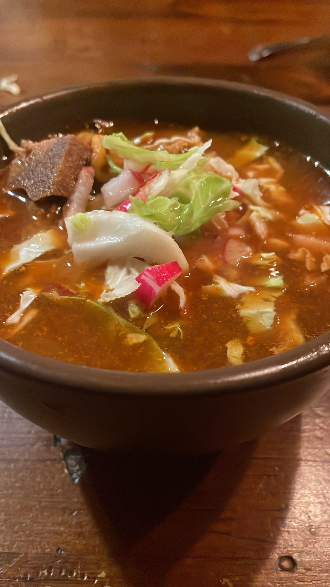

Posole Recipe

What is posole?
Posole is a popular Mexican dish that is enjoyed mostly during the winter season although many places serve posole all year round.
Posole could be either Red or Green but for this recipe we wil be going with the red posole recipe.
Below is a list of ingredients that you will need for this recipe. I got this recipe from the Food Network
- 3/4 cup dried chiles de arbol
- 4 or 5 dried ancho chiles
- 6 cloves garlic (2 smashed, 4 finely chopped)
- Kosher salt
- 2 pounds boneless pork shoulder, trimmed and cut in half
- 2 teaspoons ground cumin
- 2 tablespoons vegetable oil
- large white onion, chopped
- 8 cups low-sodium chicken broth
- 1 tablespoon dried oregano
- 3 15-ounce cans white hominy, drained and rinsed
- Diced avocado, shredded cabbage, diced onion, sliced radishes and/or fresh cilantro, for topping
Below are instruction from the Food Network on how to properly prepare this dish.
- Break the stems off the chiles de arbol and ancho chiles and shake out as many seeds as possible. Put the chiles in a bowl and cover with boiling water;
- Weigh down the chiles with a plate to keep them submerged and soak until soft, about 30 minutes. Transfer the chiles and 1 1/2 cups of the soaking liquid to a blender.
- Add the smashed garlic and 1/2 teaspoon salt and blend until smooth. Strain through a fine-mesh sieve into a bowl, pushing the sauce through with a rubber spatula; discard the solids
- Rub the pork all over with the cumin and 1/2 teaspoon salt; set aside.
- Heat the vegetable oil in a Dutch oven or pot over medium heat. Add the onion and cook, stirring occasionally, until soft, about 5 minutes. Add the chopped garlic and cook 2 minutes. Increase the heat to medium high.
- Push the onion and garlic to one side of the pot; add the pork to the other side and sear, turning, until lightly browned on all sides, about 5 minutes. Stir in 2 cups water, the chicken broth, oregano, bay leaf, 1/2 teaspoon salt and 1/2 cup to 3/4 cup of the chile sauce (depending on your taste).
- Bring to a low boil, then reduce the heat to maintain a simmer. Partially cover and cook, turning the pork a few times, until tender, about 3 hours. Stir in the hominy and continue to simmer, uncovered, until the pork starts falling apart, about 1 more hour.
- Remove the bay leaf. Transfer the pork to a cutting board; roughly chop and return to the pot.
- Add some water or broth if the posole is too thick. Season with salt.
- Serve with assorted toppings and the remaining chile sauce.